Là nhà nhiếp ảnh và sản xuất bưu ảnh lớn nhất tại Việt nam đầu thế kỉ XX, Pierre Dieulefils chụp rất nhiều ảnh về kiến trúc, phong cảnh, sinh hoạt hàng ngày và người dân đủ mọi tầng lớp. Với lợi thế thắng thầu trong việc chụp ảnh thẻ thân, ông có cơ hội đi rất nhiều nơi. Trong số 4.800 tấm bưu ảnh có một loạt ảnh về cuộc khởi nghĩa Yên Thế được đánh mã số từ 3300-3354. Không có gì quá đáng khi nói một giai đoạn quan trọng trong lịch sử Việt nam được thể hiện trên những tấm bưu ảnh của ông.
(Lưu ý: Phần chú thích được in nghiêng dưới mỗi bức ảnh được dịch từ nguyên bản chú thích trên bưu ảnh, nhằm mục đích tìm hiểu quan điểm của nhà sản xuât)
Năm 2007, một cuốn sách về Đề Thám được xuất bản tại Pháp, tác giả của nó là Claude Gendre, cháu nội của Jean Gendre, một lính Pháp thuộc trung đoàn 10 đóng ở Bắc Bộ, từng tham chiến chống lại nghĩa quân của Đề Thám từ 1908 đến 1911 tại Yên Thế. Từ nhỏ cậu bé Claude Gendre đã bị hấp dẫn bởi câu chuyện ông nội kể về một miền đất xa xôi, và đặc biệt là nhân vật Đề Thám, sau này, khi trở thành nhà văn, Claude Gendre bắt đầu sưu tầm tài liệu và viết cuốn sach về Đề Thám mang tên “Le Dê Thám (1858-1913) Un résistant vietnamien à la colonisation francaise”
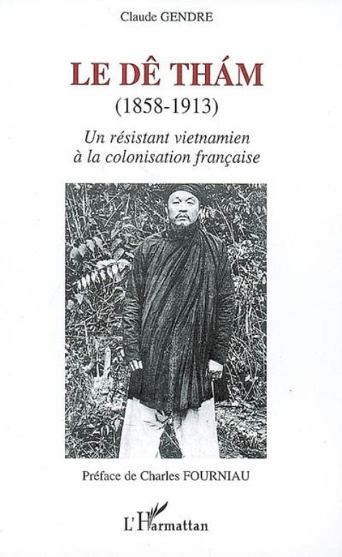
Hoàng Hoa Thám hồi còn bé tên là Trương Văn Nghĩa, quê gốc làng Dị Chế, huyện Tiên Lữ, Tỉnh Hưng Yên.Ông sinh khoảng cuối năm 1858. Cha là Trương Văn Thận và mẹ là Lương Thị Minh. Sinh thời, bố mẹ Hoàng Hoa Thám đều là những người rất trọng nghĩa khí, cả hai ông bà đều gia nhập cuộc khởi nghĩa của Nguyễn Văn Nhàn chống triều đình. Cuộc khởi nghĩa thất bại, vợ chồng ông Thân cùng em trai chốn thoát, đổi sang họ Đoàn để tránh bị truy lùng. Nhưng sau đó bọn hào lý địa phương tố giác, ông Thân bị bắt giải về kinh, bà Thân bị giết, người em trai lúc ấy đang bế cháu là Đề Thám đi chơi nên chạy thoát sang Yên Thế, đổi tên mình Quát, tên cháu là Thiêm và ngụ ở làng Trũng.
Khi người chú chết, Thiêm phải đi chăn trâu cho nhiều gia đình như Khán Tích, Cai Nghi. Theo Alfred Bouchet, (một người lính đóng ở Nhã Nam, Bắc Giang trong suốt bốn năm, có chụp ảnh chung với Đề Thám), Thiêm không biết đọc biết viết, chăn trâu và làm công cho trưởng làng tên là Bá Phức (Thân Văn Phức), sức khỏe như sức của bốn người, ba trâu.
Vào quãng năm 1873, khi Thiêm 15 tuổi, người Pháp gây sự biến Bắc Kỳ lần thứ nhất, chàng trai có mặt trong cuộc khởi nghĩa Đại Trận. Rèn luyện trong hàng ngũ Đại Trận, tiếp đó là trong hàng ngũ những người dân địa phương rào làng, lập lũy chống lại những toán thổ phỉ triều Mãn Thanh từ Trung Hoa sang cướp phá, Thiêm trở thành một chiến binh, một thủ lĩnh quân sự thực thụ. Vào quãng năm 1876, khi 18 tuổi, Thiêm cưới bà Thị Tảo và sinh một con trai tên là Cả Trọng (Hoàng Đức Trọng).
Năm Hàm Nghi thứ nhất (1884), khi Pháp chiếm Bắc Ninh, Thiêm 26 tuổi, gia nhập nghĩa binh của Trần Quang Loan, lấy tên là Đề Dương, trở thành “một kẻ thù cứng cựa nhất kể từ khi chúng ta chiếm đóng” (báo cáo ngày 27.04.1909 của tướng Geil lên Bộ Chiến Tranh và Thuộc Địa).
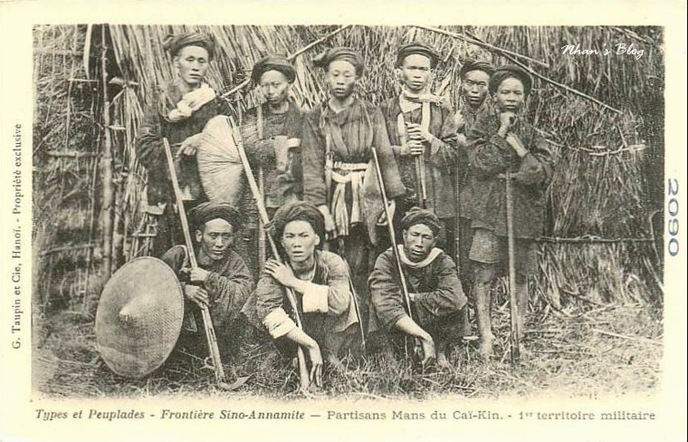
Nghĩa binh của Cai Kinh
Năm 1885, Đề Dương cùng Bá Phức và Thông Luận rời quê hương lên Hữu Lũng theo Cai Kinh (Hoàng Đình Kinh – một mệnh quan của triều đình cai quản vùng Hữu Lũng). Khi về chiến đấu dưới trướng Cai Kinh, Thiêm được phong làm Đốc Binh và được Cai Kinh nhận làm con nuôi, đặt tên là Hoàng Hoa Thám. Sau khi Cai Kinh qua đời năm 1888, Bá Phức nhận Hoàng Hoa Thám làm con nuôi và phong cho chức Đề Đốc. Như thế, cái tên Đề Thám – cách gọi ngắn gọn của Đề Đốc Hoàng Hoa Thám ra đời.
Đề Thám người tầm thước, vai rộng, ngực nở, tóc thường cắt ngắn, có khi cạo trọc, mắt một mí, dáng đi chậm chạp, nói năng từ tốn, nhỏ nhẹ. Được rèn luyện nhiều trong lao động và chiến đấu nên rất cường tráng. Đề Thám có năng lực chiến đấu ít người sánh kịp. Ông có sự hiểu biết rất sâu sắc về sử dụng địa hình, địa vật trong chiến đấu. Trong cuốn sách “Le Dê Thám (1858-1913) Un résistant vietnamien à la colonisation francaise” Claude Gendre tả về địa thế chiến lược của Yên Thế, một vùng đồi núi hiểm trở, cây cối rậm rạp, mặt đất đầy rắn rết, vắt đỉa hút máu, sâu bọ, cọp beo, cùng các loại thú rừng rình rập. Nơi này thuận lợi cho việc xây dựng căn cứ ẩn náu và hậu cần, vì chỉ cách Hà Nội 60 cây số, có nhiều ngả thông với miền thượng du hiểm trở sau lưng và vùng đồng bằng rộng lớn trước mặt. Đề Thám xử dụng cách đánh của những đảng cướp: dụ quân địch vào một nơi đã giăng bẫy sẵn để giết, nhưng nếu bị tấn công thì đột nhiên biến mất, không để lại dấu vết.
Khi thực dân Pháp đánh tan được quân của Cai Kinh, Đề Thám trở về đầu quân cho Đề Nắm (Lương Văn Nắm). Nghĩa quân Yên Thế dưới sự lãnh đạo của Đề Nắm – Đề Thám – Bá Phức đã lập nên những chiến thắng vang dội ở Cao Thượng, Hố Chuối và phòng tuyến sông Sỏi. Năm 1889 Bá Phức xây dựng thành Cao Thượng, Đề Thám xây thành Hữu Nhuế. Lực lượng của Đề Thám vào tháng chín 1889 gồm khoảng ngàn người trang bị với khoảng 500 khẩu súng.
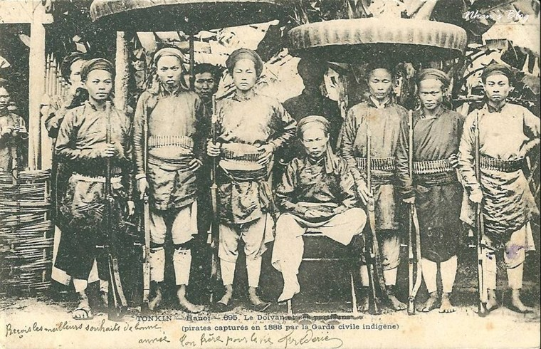
76. Hà nội – Đội Văn cùng các nghĩa binh (những kẻ làm loạn bị lực lượng dân sự bản xứ bắt năm 1888)
Vào tháng 3 năm 1890, Đội Văn, một lãnh tụ kháng chiến của vùng đồng bằng ra đầu hàng quan Khâm lược Hoàng Cao Khải, rồi sau đó lại quay trở về Yên Thế tiếp tục tham dự phong trào Cần Vương, nhưng đến tháng 12 lại ra đầu thú, nhưng lần này bị Pháp chặt đầu tại quảng trường Paul Bert tại Hà Nội, đầu phơi trên cây còn xác thì vất xuống sông Hồng. Hai tướng Pháp, Godin và Godard, được lệnh đi đánh dẹp Bá Phức và Đề Thám.
Ngày 22 tháng 12 năm 1890 tướng Winckel – Mayer đem 600 quân và 4 đơn vị pháo binh tấn công nhưng cũng không thắng. Trong các tháng 11 và 12.1890, nghĩa quân đã 4 lần đánh bại các đợt tấn công của Pháp vào căn cứ. Ngày 11 tháng 1 năm 1891 tướng Frey đem 1.300 quân tấn công, quân Đề Thám biến mất trong rừng. Tranh thủ thời cơ, quân Pháp tiến vào vùng Nhã Nam, vừa tổ chức các cuộc càn quét, vừa xây dựng các đồn bốt để bao vây nghĩa quân.
Chiến sự đặc biệt ác liệt từ 25.3.1892 đến 31.3.1892, Pháp huy động hơn 2.200 quân bao gồm nhiều binh chủng (công binh, pháo binh…) do tướng Voiron chỉ huy ào ạt tấn công vào căn cứ nghĩa quân. Do tương quan lực lượng quá chênh lệch, nghĩa quân sau nhiều trận kịch chiến đã phải rút khỏi căn cứ. Lực lượng nghĩa quân bị suy yếu rõ rệt. Khó khăn ngày càng nhiều, một số thủ lĩnh hi sinh, một số khác ra hàng. Đề Nắm bị nội phản sát hại tháng 4-1892. Từ mùa xuân năm 1892, Đề Thám đảm nhận vai trò thủ lĩnh tối cao của cuộc khởi nghĩa Yên Thế.
Mỏi mệt vì hùm xám Yên Thế luôn luôn thoát khỏi mọi sự tấn công, tướng Galliéni giao trách nhiệm cho Tổng đốc Lê Hoan, con nuôi của quan Kinh lược Hoàng Cao Khải, kẻ thù không đội trời chung của Đề Thám. Lê Hoan được cử thực hiện các hành động chia rẽ, ám sát và tuyên truyền khủng bố dân chúng. Lần lượt, một số lãnh tụ như Bá Phức, Thống Luận, Thống Ngô, Đề Công ra đầu hàng.
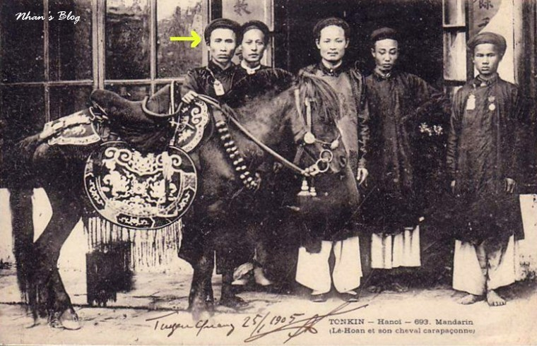
Bức bưu ảnh này được ghi mã số 693 với chú thích “Hà nội – Quan lại (Lê Hoan và con ngựa của mình)”, dòng lưu bút của người sử dụng ghi ngày 25/01/1905, nhưng khi đưa vào bộ ảnh Yên Thế, Pierre Dieulefils đánh lại mã số và lại ghi chú khác hẳn về thời gian (xem ảnh dưới)
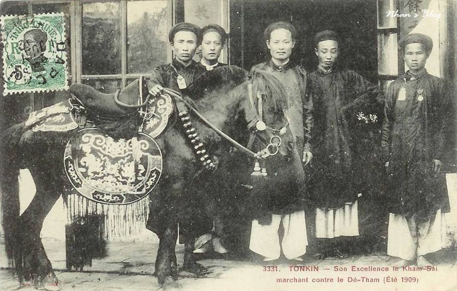
3331. Khâm Sai – người đối đầu với Đề Thám (mùa hè năm 1909)
Trong số các lãnh tụ ra hàng có Phu Dang Phu, tức Bá Kỳ, đồng đảng của Lương Tam Kỳ. Bá Phức, cha nuôi của Đề Thám khi đó 67 tuổi, về đầu hàng ngày 15 tháng 2 năm 1894. Trong khi Bá Phức tưởng Đề Thám sẽ cùng về hàng với mình, thì trái lại, Đề Thám lại đứng trên quan điểm rằng sự đầu hàng của Bá Phức giải thoát cho Đề Thám mọi nghĩa vụ ràng buộc với người cha nuôi. Quân của Bá Kỳ và Bá Phức đi theo Đề Thám, ông trở thành lãnh tụ cầm đầu của phong trào Cần Vương tại Yên Thế.
Đầu tháng 5-1894, Công sứ Bắc Ninh Muselier quyết định chấm dứt cuộc thương lượng (từ cuối tháng 1-1894) với Đề Thám và chuẩn bị tấn công căn cứ Yên Thế. Trước khi dùng biện pháp quân sự, Công sứ Bắc Ninh đã mật bàn cùng Tổng đốc Bắc Ninh Lê Hoan một âm mưu thâm độc và hèn hạ: đó là sai Ba Phức đi ám hại Đề Thám. Trong một buổi gặp mặt tại Luoc Ha, nơi ở của Bá Phức, ông ta mời trà Đề Thám. Đề Thám đưa tách trà cho người hầu của Bá Phức uống, người này lăn ra chết sau khi uống xong tách trà. Lần sau, với danh nghĩa cha vào thăm con, Ba Phức bí mật đem mìn và trở lại căn cứ Yên Thế gặp Đề Thám. Hai người ngủ chung trong một căn nhà, gần sáng Bá Phức đặt mìn dưới gậm giường của Đề Thám, châm ngòi lửa, rồi trốn ra. Đề Thám thoát chết, nhưng cho vợ con mặc đại tang giả vờ đưa quan tài đi. Quân của Muselier tưởng là đã thành công. Sau vụ này Đề Thám chấm dứt tình phụ tử với Bá Phức. Đến nay dân gian vẫn lưu truyền lá huyết thư của Hoàng Hoa Thám gửi Bá Phúc:
Đọc mấy lời trong bức thư cha nhủ,
Giòng lệ con hoen ố mảnh nhung y.
Nhớ ngày nào mang chí lớn ra đi,
Trong dĩ vãng cha ghi nhiều kiêu hãnh.
Kìa lưỡi kiếm máu kẻ thù còn dính,
Mà anh hùng tim lạnh bởi hư vinh.
Trong phong ba vùng vẫy bóng nghê kình,
Ham mồi béo nạp mình cho ngư phủ.
Nơi rừng xanh tung hoành con mãnh hổ,
Ham mồi ngon ủ rũ chốn chuồng con.
Bả vinh hoa làm mất cả tâm hồn,
Và lay chuyển cả lòng son dạ sắt.
Mây Nùng Lĩnh còn mịt mù u uất,
Sông Nhị Hà còn chứa chấp căm hờn.
Thì đời con là của cả giang sơn,
Dù thịt nát xương tan đâu dám kể.
Rồi những lúc cha vui vầy vị kỷ,
Là khi con rầu rĩ khóc non sông.
Đêm canh trường cha nệm ấm chăn bông,
Nơi rừng thẳm con nằm gai nếm mật.
Cha hít thở hương trầm thơm bát ngát,
Pha lẫn mùi máu thịt của lê dân.
Thì mũi con nghẹt thở, cổ khô khan,
Tai vẳng tiếng hồn oan trong thảm cảnh.
Cha, nơi ngực đầy mề đay kim khánh,
Con, bên sườn lấp lánh kiếm tiêm cừu.
Cha say mê bên thiếu nữ yêu kiều,
Con tận tụy với tình yêu tổ quốc.
Nghĩa là cha đem tài năng trí óc,
Mưu vinh thân là mục đích cuối cùng.
Thì con thề đem xương trắng máu hồng,
Ra cứu vớt non sông là chí nguyện.
Cha với con thế là hai trận tuyến,
Cha một đường mà con tiến một đường.
Thôi từ đây hai chữ cang thường,
Con mở rộng để dâng thờ Tổ Quốc.
Buổi đoàn viên thôi cha đừng mong ước,
Cuộc hội đàm là đại bác thần công.
Bức thư đây là bức cuối cùng,
Mà cha chỉ là cha trong dĩ vãng.
Thôi hạ bút cho thâm tình gián đoạn,
Để người đời kết án kẻ gian phi.
Thanh gươm thần ta tuốt sẵn chờ khi…
Sau khi dùng Ba Phức để ám hại Đề Thám không thành, tên công sứ Bắc Ninh đã trực tiếp chỉ huy quân tấn công đồn Hữu Nhuế. Nghĩa quân Yên Thế rất gan dạ, bình tĩnh đợi địch tiến sâu vào trận địa rồi bất thần nổ súng tấn công. Quân Pháp bị chết và bị thương rất nhiều.
Ngày 17 tháng 9 năm 1894 quân của Đề Thám đã phối hợp với công nhân công trường đường sắt Lạng Sơn bắt cóc Chesnay chủ bút tờ báo “Tương lai xứ Bắc Kỳ” (Avenir du Tonkin) kiêm thầu khoán công trường đường sắt và Logiou nhân viên, trên đoạn đường Suối Ghềnh – Bắc Lệ. Qua trung gian của Giám Mục Velasco người Tây Ban Nha, Đề Thám thương lượng với Toàn quyền tạm thời Chavassieur các điều kiện đình chiến và trả tự do cho Logiou và Chesnay, dẫn đến cuộc hòa hoãn lần thứ nhất diễn ra vào tháng 10-1895. Kết quả là quân Pháp rút khỏi khu vực Yên Thế, giao các tổng Nhã Nam, Mục Sơn, Yên Lễ, Hữu Thượng cho nghĩa quân kiểm soát. Đề Thám được toàn quyền thu thuế và sử dụng tiền thuế thu được ở 4 tổng đó trong thời hạn 3 năm liền. Đề Thám, gia đình và đoàn quân của ông định cư tại Phồn Xương.Đề Thám không được yên lâu, vì cuối năm 1895 tướng Galliéni gởi tối hậu thư đòi ông ra đầu hàng vô điều kiện, rồi đem quân tấn công Phồ Xương. Một lần nữa, Đề Thám biến mất trong núi rừng Yên Thế. Từ tháng 9-1897, Toàn quyền Đông Dương và Thống sứ Bắc Kỳ đã chỉ thị cho các cấp chính quyền dân sự cũng như quân sự là phải tìm mọi biện pháp để tiêu diệt cho bằng được cuộc khởi nghĩa của Đề Thám. Chúng đặt giải thưởng cho kẻ nào bắt sống hoặc giết được Đề Thám. Chúng đã mở nhiều đợt càn quét, truy lùng Đề Thám, song đều không có kết quả, thậm chí không tìm ra vết tích của Đề Thám. Trái lại, bất kỳ lúc nào chúng cũng bị nghĩa quân Đề Thám đột kích, tấn công, tiêu diệt dần sinh lực của chúng.Trước sự truy lùng và vây quét ráo riết của quân Pháp, lực lượng của Đề Thám ngày càng suy yếu. Để bảo toàn lực lượng, Đề Thám giảng hòa với Pháp lấn thứ hai. Thực dân Pháp lúc này cũng muốn chấm dứt xung đột để tiến hành khai thác thuộc địa. Vì vậy, tháng 12-1897, hiệp ước hòa hoãn giữa Pháp và nghĩa quân Đề Thám đã được kí kết với những điều kiện ràng buộc chặt chẽ hơn, nghĩa quân phải nộp cho Pháp tất cả vũ khí và phải bãi binh. Đề Thám công khai trở về vùng Nhã Nam và bí mật củng cố, xây dựng căn cứ Nhã Nam. Bản thân Đề Thám đóng ở Chợ Gồ. Đề Thám bề ngoài tỏ ra là phục tùng, nhưng bên trong vẫn ngầm củng cố lực lượng. Năm đó Đề Thám 39 tuổi.
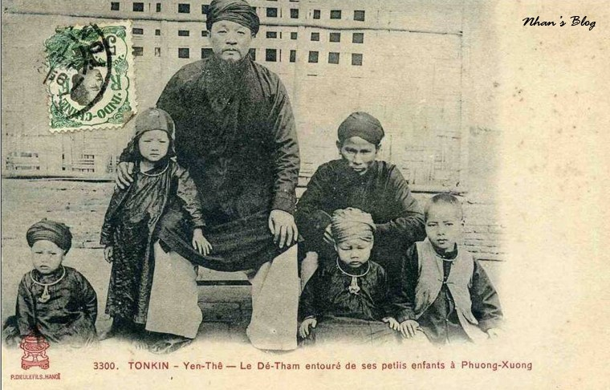
3300. “Yên Thế – Đề Thám cùng con cháu ở Phồn Xương”.
Đời sống yên bình, sung túc của một gia đình điền chủ ở cách Hà nội tới 60km thể hiện rõ qua trang phục và trang sức của các cô cậu trong ảnh. Các nguồn dữ liệu đều nhận định chung về thời gian người Pháp chụp những bức ảnh này là khoảng thời gian hòa hoãn lần thứ hai. Nhưng đây là quãng thời gian khá dài, gần 11 năm (từ năm 1897 đến 1908). Sẽ dễ dàng xác định thời gian chụp nếu biết cô bé đứng bên Đề Thám là ai. Liệu đó có phải là cô con gái Hoàng Thị Thế?
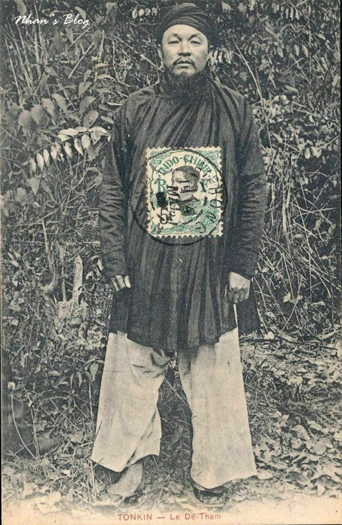
3353. Đề Thám.
Trang phục của Đề Thám giống bức ảnh trên, có thể hai bức này được chụp cùng một thời điểm. Tuy nhiên cách đánh mã số của Pierre Dieulefils rất khó hiểu (từ 3300 đến 3353). Về thời gian chụp, rõ ràng đây là những năm đầu thời kì hòa hoãn, nhờ chất lượng rõ nét của bức ảnh ta thấy Đề Thám, tuy để râu, nhưng trông trẻ hơn nhiều so với bức số 3302 (bên dưới).
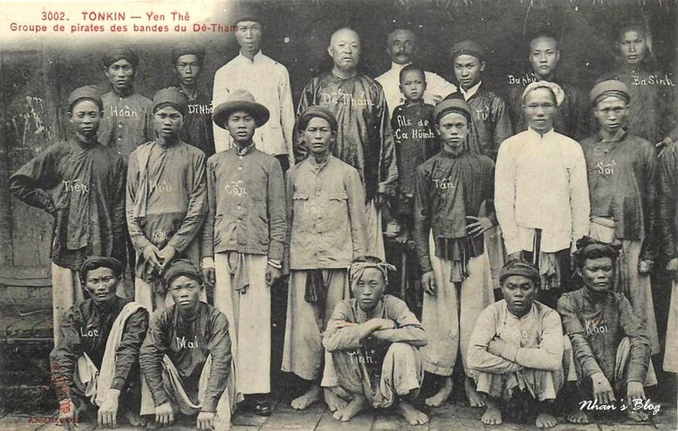
3302. “Yên Thế – Loạn quân nhóm Đề Thám.”
Bức ảnh này trung úy Romain Desfossés chụp người đồng hương của mình bên cạnh Đề Thám và các chiến hữu của ông. Mối quan hệ giữa Đề Thám và người Pháp lúc này có vẻ hữu hảo. Cậu bé trai, con Cả Huỳnh (đứng trước viên sĩ quan Pháp) còn được kê ghế đứng để không bị khuất giữa đám cha chú. Tất nhiên, khi quan hệ thù tạc trở thành thù địch, chân dung từng người được nghiên cứu, ghi nhận rất kĩ lưỡng nhằm mục đích tiêu diệt. Ở một khía cạnh khác, ta hiểu thêm ngoài những bức ảnh do chính mình chụp, Pierre Dieulefils đã sử dụng các nguồn ảnh khác nhau để phát hành thành bưu ảnh.
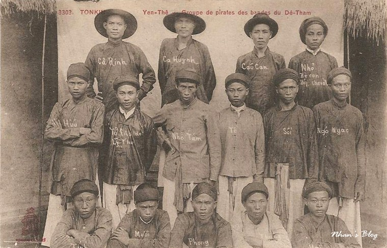
3303. “Yên Thế – Loạn quân nhóm Đề Thám.”
Việc chụp bức ảnh này được chuẩn bị kĩ lưỡng: mọi người xếp thành ba hàng cao thấp trước tấm phông hắt sáng được căng bằng những cành tre. Ta gặp lại một loạt các gương mặt anh tài đã xuất hiện ở bức 3302: Hữu, Tứ con trai Lý Thu, Sồi, Tính… Nhờ bức ảnh này ta biết mặt hai thủ lĩnh của cuộc khởi nghĩa Yên Thế: Cả Rinh và Cả Huỳnh – hai người con nuôi của Đề Thám. Sự nổi tiếng của họ đã khiến các hãng bưu ảnh phải crop chân dung họ từ bức ảnh chụp chung để phát hành bưu ảnh riêng, như bố nuôi của mình.
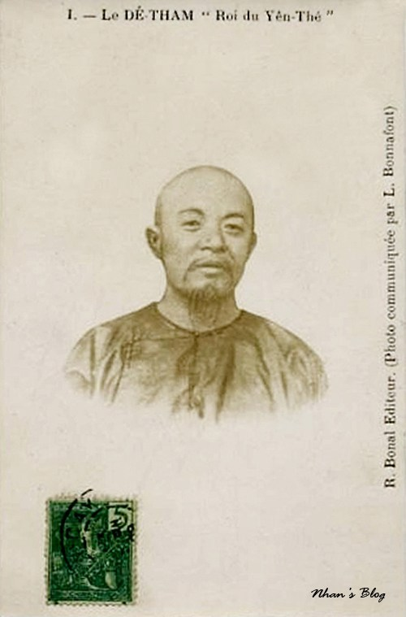
Bức “Đề Thám – hùm xám Yên Thế” được crop từ bức 3302. Có thể thấy rõ đây là cuối thời kì hòa hoãn, Đề Thám đã phát tướng và già đi nhiều.
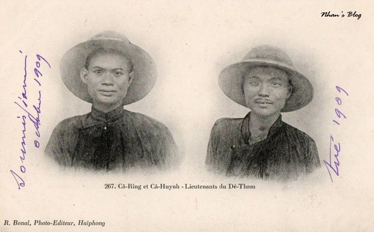
Chân dung Cả Rinh và Cả Huỳnh được crop từ bức 3303.
Trong 11 năm hưu chiến, Đề Thám gần như đã trở thành một điền chủ trong vùng. Dưới sự điều hành của Đề Thám và nghĩa quân, đồn điền Phồn Xương có xu thế rõ rệt là muốn tách ra khỏi sự kiểm soát của chính phủ Thuộc địa Pháp. Một bản điều tra của Pháp ghi: “Bản thân Đề Thám muốn được sống yên ổn trong cái góc Chợ Gồ của ông song rất nhiều nghĩa quân của ông ưa cầm súng hơn là cầm cày. Những người này giám sát chặt chẽ Đề Thám nhằm nuôi dưỡng trong ông sự hằn thù với Pháp”. Một số lãnh tụ của các phong trào yêu nước như Phan Bội Châu, Phan Chu Trinh đã có liên hệ với nghĩa quân Yên Thế những mang lại rất ít kết quả. Trong khi các phong trào giải phóng dân tộc ở dưới xuôi và ở Trung kỳ bùng nổ, nghĩa quân Yên Thế vẫn án binh bất động và bình tâm khai phá ruộng đất ở đồn điền Phồn Xương. Đề Thám cũng không rời bước đi đâu, ngoài những buổi thăm viếng, tiệc tùng ở Nhã Nam.
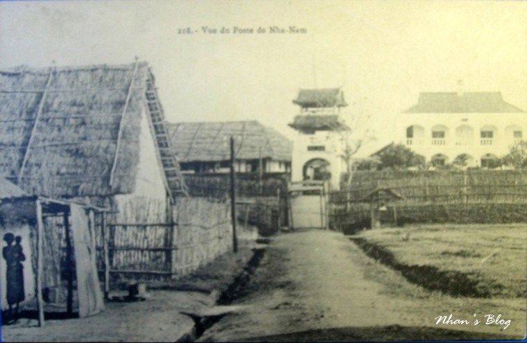
Một khu đồn Pháp ở Nhã Nam
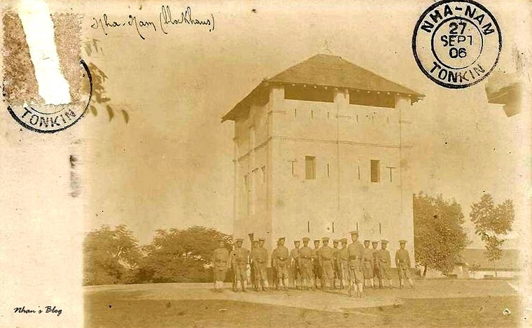
Lính chính quy của quân đội Pháp ở Nhã Nam năm 1906
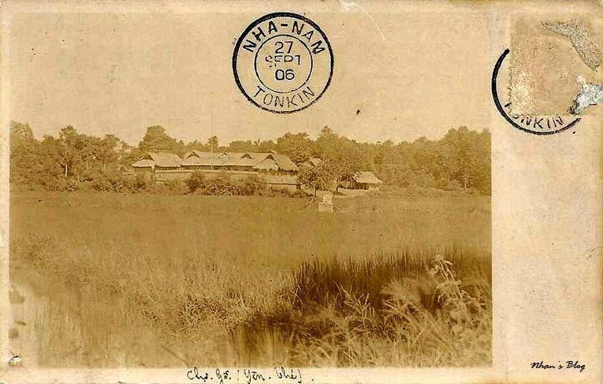
Cùng với Nhã Nam, địa danh Chợ Gồ cũng đi vào sử sách của phong trào Yên Thế
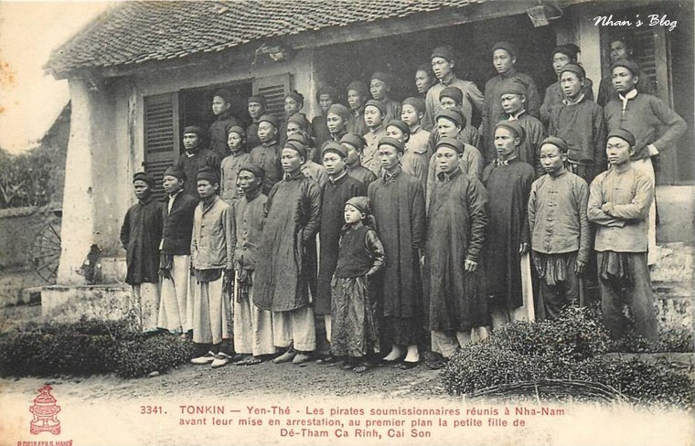
3341. Yên Thế – Loạn quân hàng phục tề tựu ở Nhã Nam trước khi bị bắt, hàng đầu có con gái Đề Thám, Cả Rinh, Cai Sơn.
Bức ảnh đại gia đình Đề Thám này chụp vào cuối thời gian đình chiến. Cả Trọng, khi đó 22 tuổi, cùng với hai người con nuôi của Đề Thám là Cả Rinh, Cả Huỳnh, cùng với gia đình 50 người đàn ông khác sinh sống trong nông trại chiến lũy của Đề Thám. Căn cứ vào độ tuổi trong ảnh của người con gái Đề Thám thì thời gian chụp khoảng năm 1906-1907, khi đó bà Hoàng thị Thế khỏang 6 -7 tuổi. Hơn nữa lời chú thích “trước khi bị bắt” cũng xác nhận thêm về thời điểm chụp bức ảnh này.
Giữa năm 1908, xảy ra vụ đầu độc binh lính Pháp ở Hà Nội có sự tham gia của Đề Thám. Nhân cơ hội này, thực dân Pháp chủ trương tập trung lực lượng tiêu diệt nghĩa quân. Tháng 1-1909, dưới quyền chỉ huy của đại tá Bataille, khoảng 15.000 quân cả Pháp và ngụy đã ào ạt tấn công vào Yên Thế. Nghĩa quân vừa chống đỡ, vừa chuyển dần xuống Phúc Yên, Vĩnh Yên, Bắc Ninh, rồi rút sang Tam Đảo, Thái Nguyên. Trên đường rút lui, nghĩa quân vẫn tổ chức đánh trả quyết liệt, gây cho Pháp những thiệt hại nặng nề. Điển hình là trận chặn giặc ở đồn Hom, Yên Thế (30-1-1909); trận núi Hàm Lợn ở Tam Đảo, Phúc Yên (15-3-1909). Trước các cuộc vây quét tiêu diệt gắt gao của quân Pháp, lực lượng nghĩa quân ngày càng giảm sút. Đến cuối năm 1909, hầu hết các tướng lĩnh đã hi sinh, hoặc sa vào tay giặc, như Cả Trọng, Cả Huỳnh, Cả Tuyển (con Nguyễn Thiện Thuật), Ba Biều, bà Ba Cẩn… Có một số người ra hàng như: Cả Rinh, Cai Sơn… Đến đây, phong trào Yên Thế coi như đã thất bại về cơ bản. Ngày 10-2-1913, Đề Thám bị giết hại tại một khu rừng cách chợ Gồ 2 km. Sự kiện này đánh dấu sự thất bại hoàn toàn của phong trào nông dân Yên Thế.
Bộ ảnh của Pierre Dieulefils về phong trào Yên Thế được đánh số từ 3300 đến 3354, tuy nhiên khi xếp theo thứ tự, chúng không nói lên được điều gì về diễn biến của dòng sự kiện. Một điểm cần chú ý: người Pháp dùng từ pirates (bọn cướp, bọn giặc) để chỉ nghĩa quân Yên Thế, trong khi đó dùng từ partisans (du kích) để chỉ lực lượng vũ trang người Việt tham gia cuộc chiến chống Đề Thám.
Ngay sau vụ đầu độc binh lính Pháp ở Hà Nội có sự tham gia của Đề Thám, thực dân Pháp chủ trương tập trung lực lượng tiêu diệt nghĩa quân. Tháng 1-1909, dưới quyền chỉ huy của đại tá Bataille, khoảng 15.000 quân cả Pháp và ngụy đã ào ạt tấn công vào Yên Thế. Những bức ảnh giai đoạn này của hãng Pierre Dieulefils mang mầu sắc phóng sự. Ghi chú trên các bức ảnh cho thấy ông ta đã bám theo các cánh quân (chủ yếu là trung đoàn 10, với các nhóm quân của Lecanu và nhóm Mayer) để ghi lại diễn biến của chiến dịch này
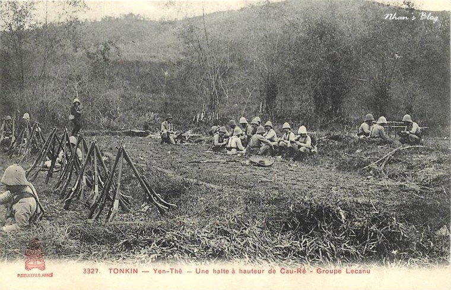
3327. Une halte à hauteur de Cau Re – Groupe Lecanu. Trên đường hành quân đến Yên Thế. Nhóm quân của Lecanu dừng chân trên một ngọn đồi ở Cầu Rẽ.
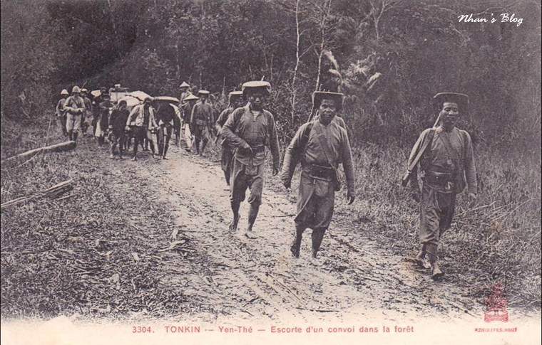
3304. Escorte d’un convoi dans la foret. Yên Thế ngày đó là một vùng núi đồi cây cối rậm rạp. Lực lượng tham gia chiến dịch gồm lính Pháp, lính tập và lính dõng. Cảnh hành quân qua rừng, viên sĩ quan Pháp chỉ huy đám lính địa phương kéo xe hậu cần phục vụ chiến dịch.
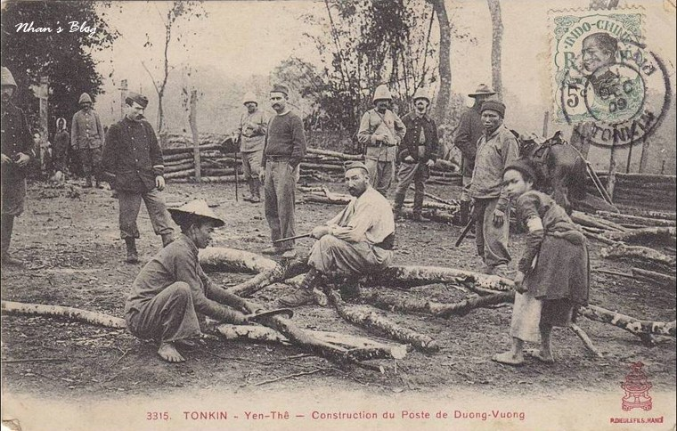
3315. Construction du poste de Duong Vuong. Đồn bốt, hàng rào bao quanh được dựng bằng cây rừng. Cảnh xây dựng đồn Duong Vuong.
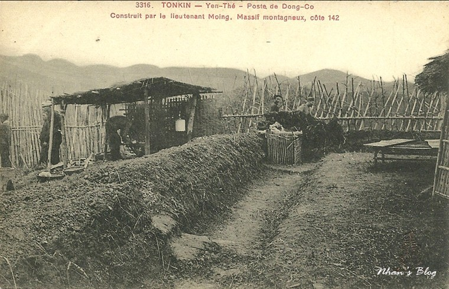
3316. Poste de Dong Co. Construit par lieutenant Moing. Massif montagneux, cote 142. Đồn Đông Cô xây dựng trên núi.
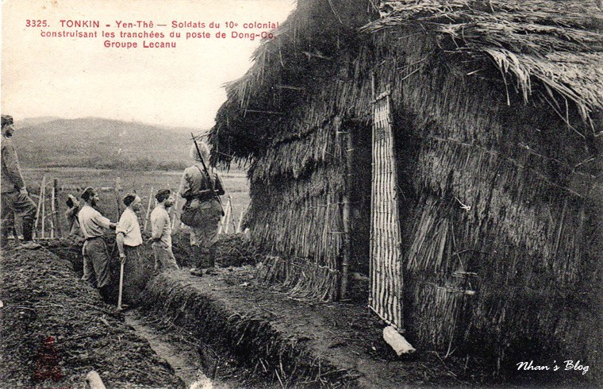
3325. Soldats du 10e Colonial construisant les tranchées du poste de Dong Co – groupe Lecanu. Binh lính trung đội 10, nhóm Lecanu đào hào trong đồn Đông Cô.
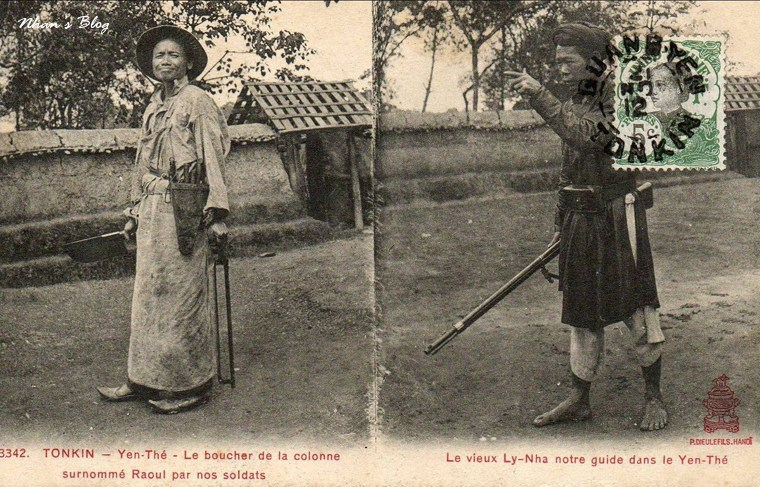
3442. Le boucher de la colonne surnomme Raoul par nos soldats/ Le vieux Ly Nha notre guide dans le Yen The. Đến một vùng đất lạ, đang xẩy ra chiến sự, Pierre Dieulefils cần có người dẫn đường.
Trên bức bưu thiếp này giới thiệu cụ thể hai nhân vật mà chắc chắn người Việt gọi họ bằng cái tên “bọn chỉ điểm” hay “Việt gian”. Bên trái: Viên đồ tể, được lính tráng gọi là bằng cái tên TâyRaoul, bên phải là Lý Nhạ – người dẫn đường cho người Pháp.
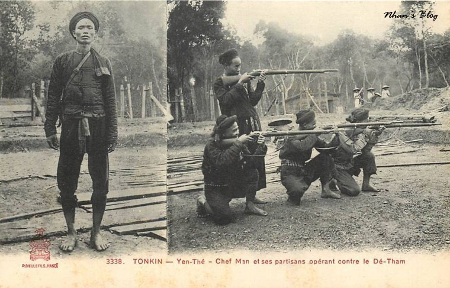
3338. Chef Man et les partisans operant contre le De Tham.
Cách dùng chữ partisans trên các bức bưu ảnh này làm cho nhiều người lẫn lộn giữa nghĩa quân Đề Thám và lực lượng thân binh theo Pháp. Chú thích trên bức bưu thiếp này giúp làm sáng tỏ phần nào cách gọi này. “Thủ lĩnh người Mán và thân binh chống Đề Thám”. Như vậy chữ partisan (thân binh) được dùng để chỉ lính địa phương theo Pháp hoặc những hàng quân Yên Thế, còn chữ pirate (giặc, cướp) để chỉ những nghĩa quân tiếp tục chiến đấu chống Pháp.
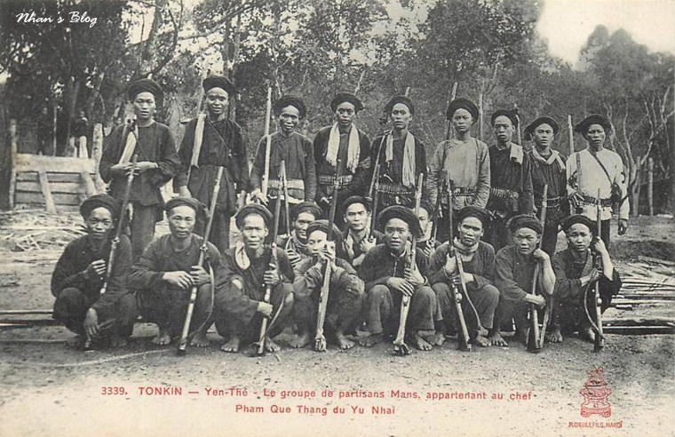
3339. Le groupe de partisans Mans, appartnant au chef Pham Que Thang de Yu Nhai. Nhóm thân binh người Mán của Phạm Quế Thăng ở Vũ Nhai
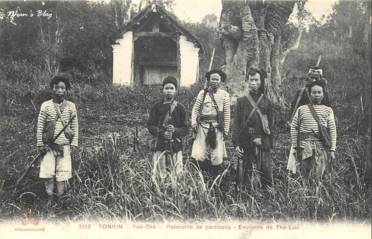
3313. Patrouille de partisans -Environs de The-Loc.Thân binh đi tuần quanh khu vực Thế Lộc.
Đây thêm một minh hoạ cho nhận định trên. Thân binh được trang bị khá đầy đủ, kể cả quân phục. Trong nhiều bức ảnh chiến sự ta còn gặp lại những bộ áo sọc này.
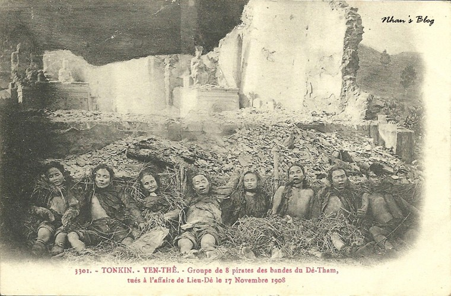
3301. Groupe de 8 pirates des bandes de De Tham, tués à l’affaire de Lieu De le 17 November 1908. Trong khi đó nghĩa quân bị gọi là giặc cướp (pirates). Tám nghĩa quân Đề Thám bị chết trong trận do Đề Liêu chỉ huy ngày 17 tháng 11 năm 1908
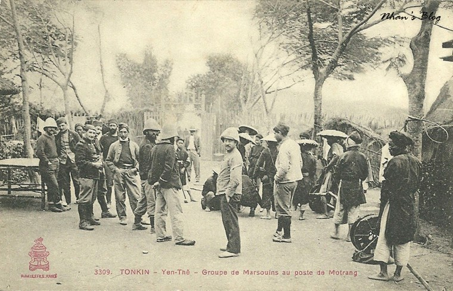
3309. Groupe de Marsouins au poste de Mo Trang.
Mỏ Trạng và Chợ Gò là hai địa điểm được P. Dieulefils phản ánh nhiều nhất trong chiến dịch tấn công Yên Thế. Nhóm “Những con cá heo” đóng quân ở Mỏ Trạng.
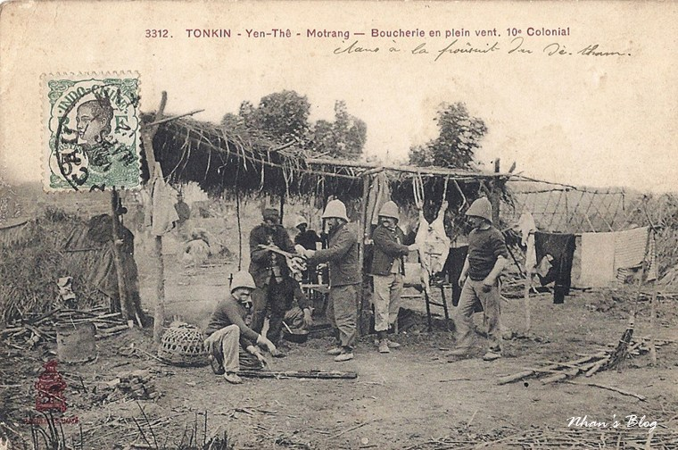
3312. Boucherie en plein.vent. 10è Colonial.
Sinh hoạt của lính Pháp được phản ánh khá đầy đủ. Lợn gà cướp được và những nụ cười phấn chấn trong bức “Lò mổ ngoài trời.” Nếu để ý ta sẽ thấy trên chiếc sào phơi có bộ quân phục sọc của cánh thân binh.
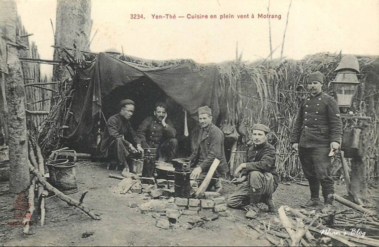
3324. Cuisine en plein air a Mo Trang.
Nán trại và nấu ăn ngoài trời ở Mỏ Trạng 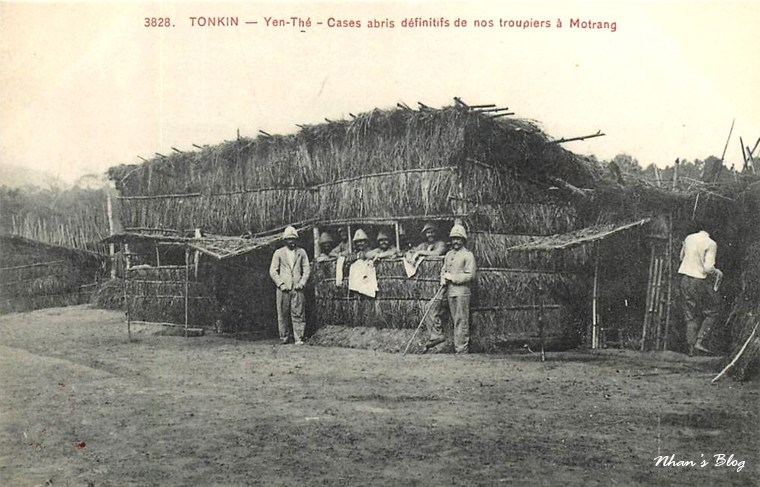
3328. Cases abris definitif de nos troupiers a Mo Trang.
Lính Pháp trú quân trong những túp lều như thế này ở Mỏ Trạng.
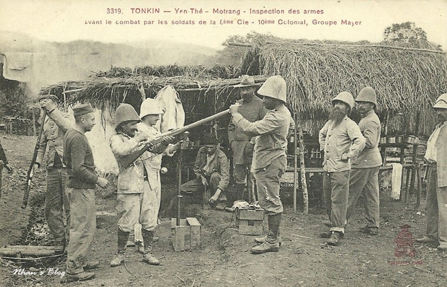
3319. Inspection des armes avant le combat par les soldats de la 8è Cie, 10è Colonial,Groupe Mayer.
Binh sĩ trung đội 10 (nhóm của Mayer) kiểm tra vũ khí trước trận đánh.
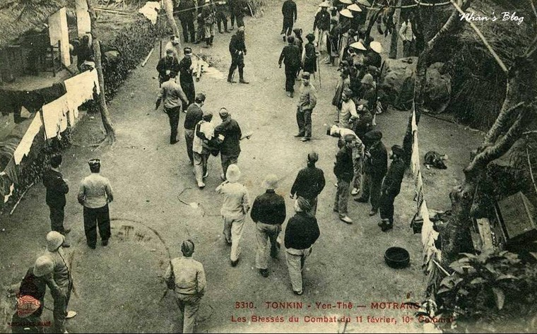
3310. Mo Trang – Les blesses du combat du 11 fevrier 10 colonial. Ngày 11 tháng Hai năm 1910 diễn ra trận đánh rất ác liệt giữa quân Pháp và nghĩa quân Yên Thế. Trung đội 10 chịu nhiều thương vong.
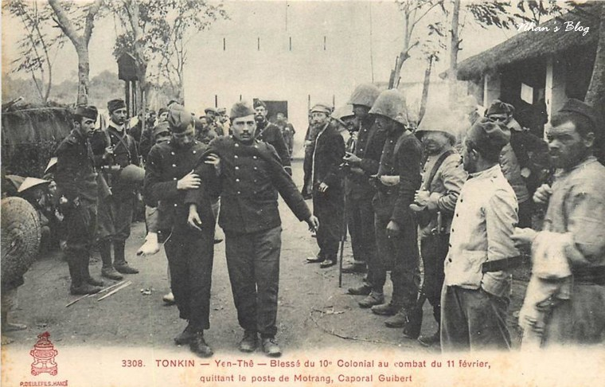
3308. Blesse du 10 colonial au combat du 11 fevrỉe, quitant le poste de Motrang, Caporal Guibert.
Có cả danh tính những người lính tham gia trận đánh này trên bưu ảnh của P. Dieulefils. Hạ sĩ Guilbert, trung đội 10 bị thương trong trận 11 tháng Hai đang rút khỏi đồn Mỏ Trạng.
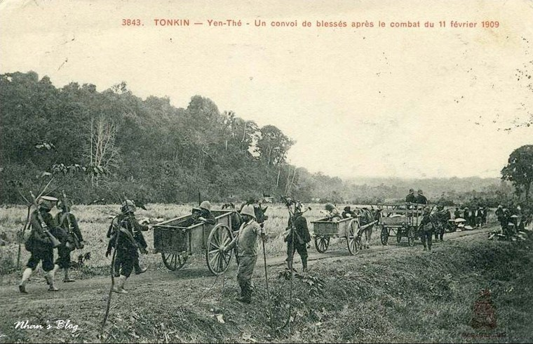
3843. Un convoi de blesses apres le combat du 11 febrier 1909.
Cảnh tải thương sau trận tấn cồng ngày 11.02.1909
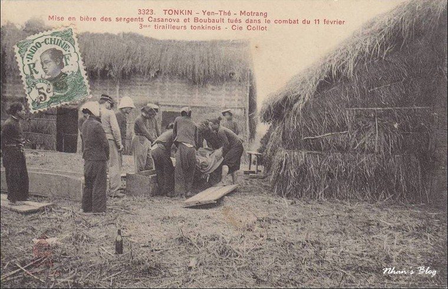
3323. Motrang – Mise en bière des sergents Casanova et Boubault tués dans le combat du 11 février, 3eme tirailleurs tonkinois.
Toán lính tập khâm liệm các lính Pháp đồn Casanova và Boubault chết trận ngày 11 tháng Hai.
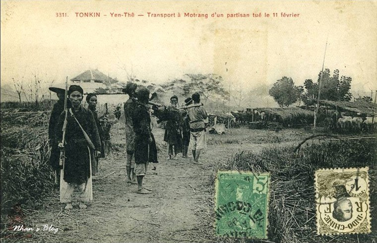
3311. Transport à Motrang d´un partisan tué le 11 février.
Tuy quen địa hình, địa vật, nhưng lực lượng lính địa phương cũng chịu nhiều tổn thất. Cảnh đưa xác một thân binh tử trận ngày 11 tháng Hai 1910 ở Mỏ Trạng.
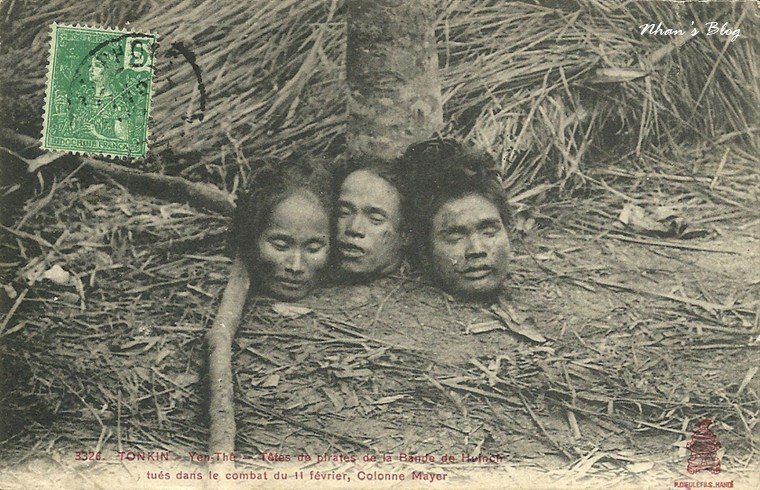
3326. Tetes de pirates de la bande de Huinch tues dans le combat du 11 fevrier, Colonne Mayer.
Phía nghĩa quân Yên Thế cũng chịu tổn thất nặng nề. Thủ cấp những nghĩa quân chết trận bị bêu ở đường làng để uy hiếp tinh thần người dân.
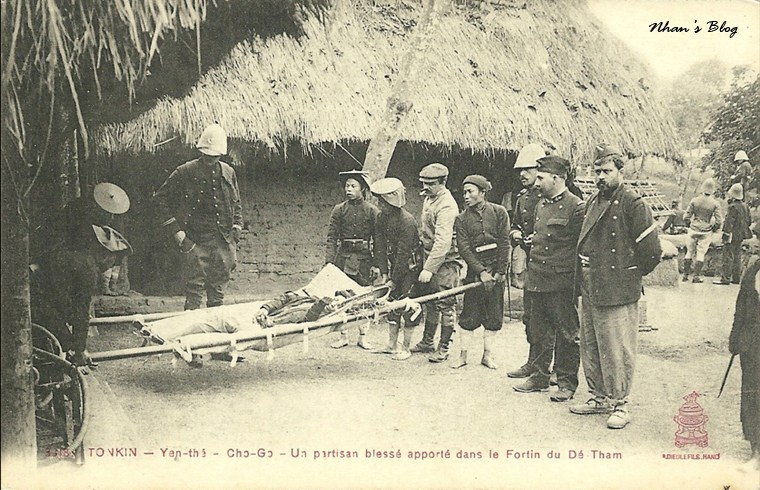
3318. Cho Go Un partisan blessé apporté dans le fortin du De Tham. Trận đánh ở Chợ Gò cũng ác liệt không kém. Cảnh lính Pháp và lính tập đang chăm sóc một thân binh bị thương khi tấn công thành luỹ của Đề Thám.
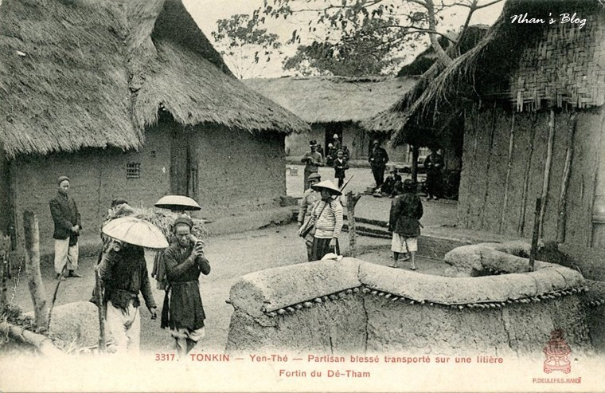
3317. Partisan blesse transporte sur une litiere fortin du De Tham.
Một thân binh bị thương được tải đi bằng những chiếc cáng lót rơm. Trong khu thành lũy đã thất thủ của Đề Thám thấp thoáng bóng những chiếc áo sọc.
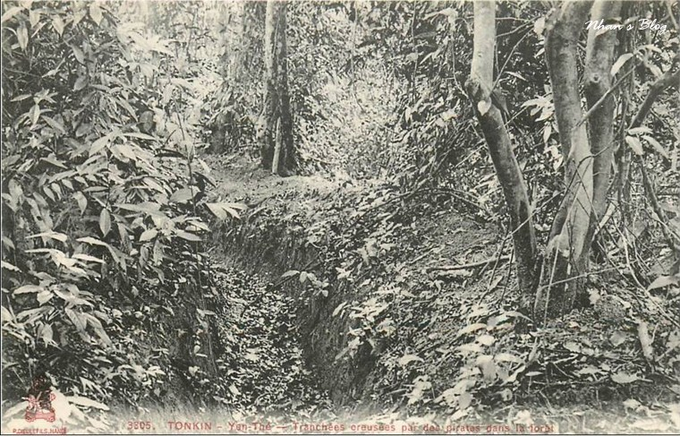
3305. Tranchées creusées par les pirates dans la forest.
Công sự của nghĩa quân trong rừng.
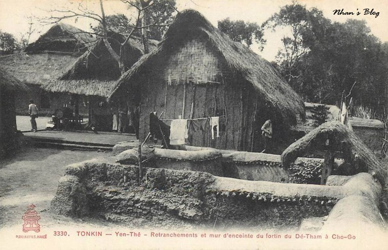
3330. Retranchements et mur d’enceinte du fortin du De Tham a Cho Go.
Trận chiến nơi đây đã đi qua. Người Pháp chú ý đến cách xây dựng những hào lũy, tường vây công sự trong căn cứ của Đề Thám ở Chợ Gò.
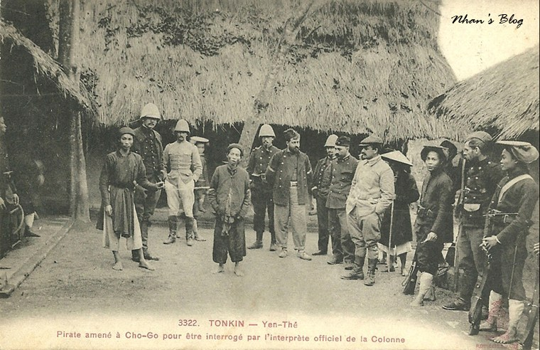
3322. Pirate amene a Cho Go pour etre interroge par l’interprete officiel de la colonne.
Một nghĩa quân bị bắt làm tù binh ở Chợ Gò bị dẫn giải đi hỏi cung thông qua người phiên dịch.
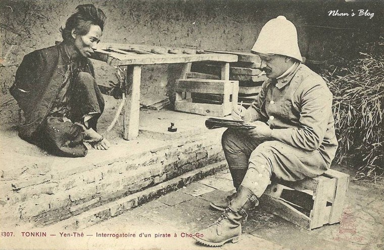
3307. Interrogatoire d´un pirate à Cho-Go.
Việc hỏi cung các nghĩa quân bị bắt nhằm truy đuổi đội quân của Đề Thám đang rút chạy.
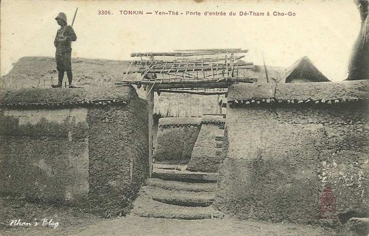
3306. Porte de entrée du fortin de De Tham à Cho Go.
Quân Pháp ngạo nghễ trên thành lũy của Đề Thám ở Chợ Gò.
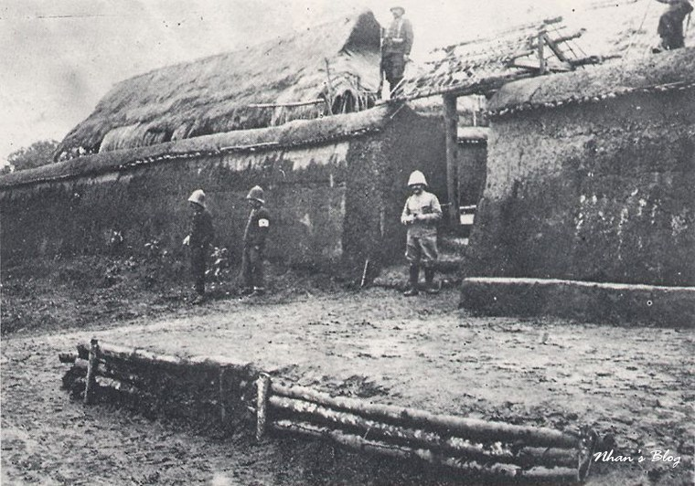
Hai bức ảnh này của trung uý Romain Desfossés chụp thành Chợ Gò từ bên ngòai và bên trong khi quân Pháp dành thắng lợi.
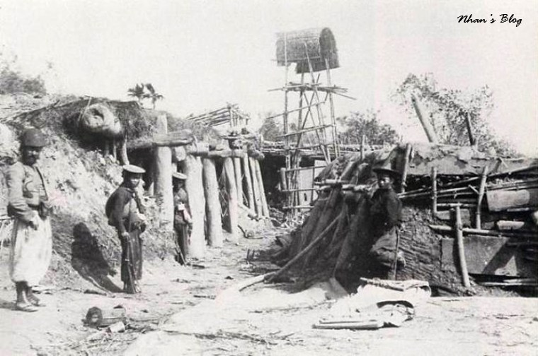
Số Phận Của Người Thân của Đề Thám Qua Bưu Ảnh
Trước các cuộc vây quét tiêu diệt gắt gao của quân Pháp, lực lượng nghĩa quân ngày càng giảm sút. Đến cuối năm 1909, hầu hết các tướng lĩnh đã hi sinh, hoặc sa vào tay giặc, như Cả Trọng, Cả Huỳnh, Cả Tuyển, Ba Biều, bà Ba Cẩn… Một số người ra hàng như: Cả Rinh, Cai Sơn… Ngày 10-2-1913, Đề Thám bị giết hại tại một khu rừng cách chợ Gồ 2 km. Sự kiện này đánh dấu sự thất bại hoàn toàn của phong trào nông dân Yên Thế.
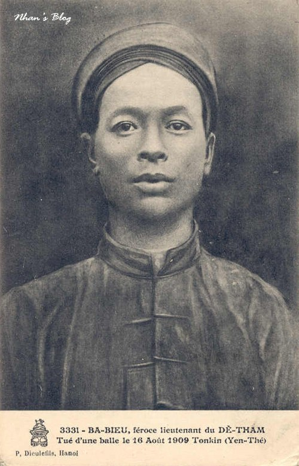
3331. Ba Biểu – một thủ lĩnh hung dữ của Đề Thám, mất ngày 16 tháng 8 năm 1909.
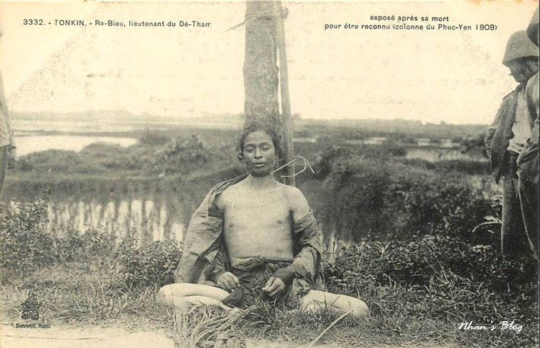
3332. Ba Biểu – một thủ lĩnh của Đề Thám bị bêu sau khi chết để nhận dạng (đội quân ở Phúc Yên 1909)
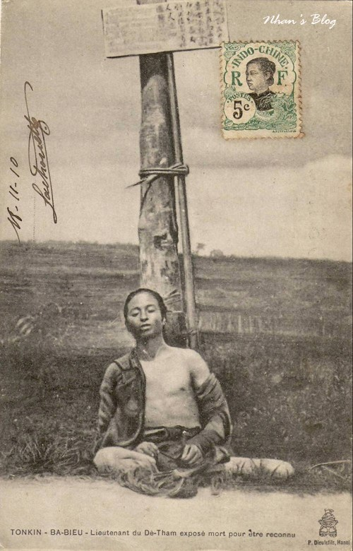
3332. Ba Biểu – một thủ lĩnh của Đề Thám bị bêu sau khi chết để nhận dạng (đội quân ở Phúc Yên 1909)
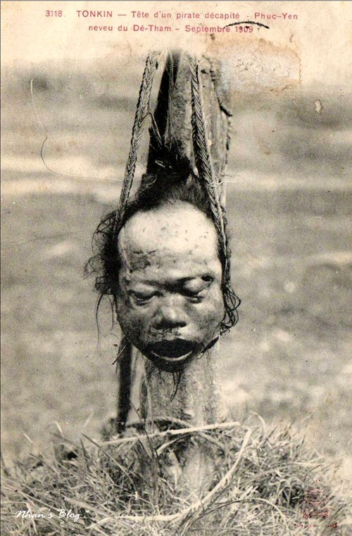
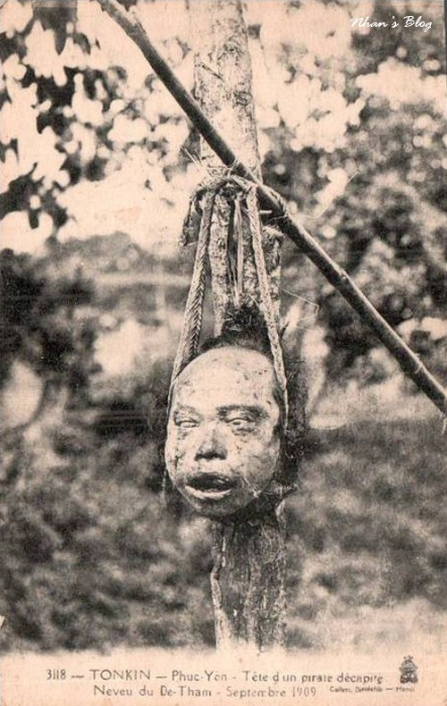
3118. Thủ cấp cháu của Đề Thám bị giết ở Pin Yên, tháng 9 năm 1909
3344. Thủ cấp của một phiến quân bị bêu để các thân hào nhận dạng
3336. Một nghĩa quân già của Đề Thám và Quynh con rể ông ta ra hàng.
3347.”Chiến dịch truy quét Đề Thám. The Mui, vợ hai của Cả Rinh (con nuôi của Đề Thám). Cũng như bố nuôi, Cả Rinh cũng đa thê. Và các bà đều là những nhan sắc.
3320. “Vợ hai của Cả Rinh – thủ lĩnh phiến quân, bị bắt bởi huyện nguyên vùng Yên Thế”. Vậy đây là The Mui (có lẽ chính xác là Thị Mùi), dáng vẻ đau khổ của bà và khung cảnh xung quanh trùng hợp với bức ảnh dưới.
3321. “Nhóm người bị bắt gồm bố vợ Đề Thám, một người vợ của Cả Rinh và 8 nghĩa quân”. Căn cứ vào trang phục, có thể phân biệt được những người trong ảnh: chỉ huy người Pháp, lính khố đỏ đội nón, lính dõng mặc áo sọc, những người bị bắt mặt mũi hốc hác, mệt mỏi.
3345. “Bố vợ Đề Thám bị bắt ở Kẻ Vôi …” Ông bị mù cả hai mắt, phải giải về Nhã Nam bằng thúng do hai người khiêng.
3333. Cả Rinh và nhóm binh lính của mình ra đầu hàng ở Núi Lạng.
3329. Ngôi chùa lớn của Đề Thám ở Chợ Gồ. Có vẻ như bình yên đang trở lại vùng đất chiến sự diễn ra suốt 26 năm.
3339. Đồn canh và quang cảnh làng Nhã Nam. Giành thắng lợi, người Pháp củng cố hệ thống đồn bốt của mình.
3351. Chợ Gò – Lối vào thành lũy của Đề Thám và khu đồn quân sự mới dựng thêm. Viên sĩ quan Pháp thảnh thơi đứng mhìn người phụ nữ địa phương bế con dạo chơi. Khu đồn mới xây phía xa đánh dấu việc hoàn thành công cuộc bình định vùng đất này.
3352. Đòn bốt, lô cốt căn cứ Casanova. Đời sống dân chúng trở lại bình thường.